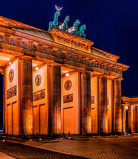
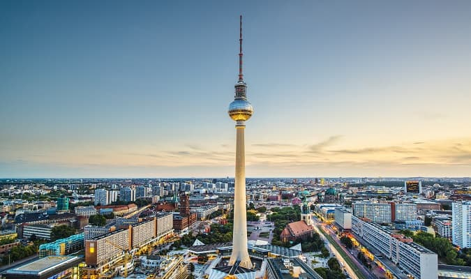
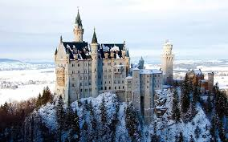

A Alemanha é um país europeu conhecido por sua rica história, com eventos marcantes ao longo dos séculos. É também um país com dados impressionantes sobre sua economia e população — confira alguns números.
A história da Alemanha inclui o Império Romano-Germânico, o Império Alemão, as Guerras Mundiais e a Reunificação em 1990. Durante esse período, muitos eventos impactaram o idioma e a cultura atual, como veremos na seção de idioma. Além disso, alguns fatos curiosos sobre esse desenvolvimento podem ser vistos em Curiosidades.
Abaixo estão alguns dados importantes sobre a Alemanha: Esses dados ajudam a entender também como se estruturam aspectos culturais, como o idioma falado e como o país se desenvolveu ao longo do tempo.
| População | Área | Idioma | Capital | Governo | Fuso Horário |
|---|---|---|---|---|---|
| 84 milhões | 357.022 km² | Alemão | Berlim | República Parlamentar | UTC+1 / UTC+2 (verão) |

O idioma oficial da Alemanha é o Alemão. Ele está presente não só na fala do povo, mas em toda a educação e cultura. Se quiser conhecer mais sobre costumes únicos do país, veja essas curiosidades.
Guten Tag! = Boa tarde!
Wie geht's? = Como vai?
Danke = Obrigado

• A Alemanha é o maior exportador de carros da Europa.
• É o país com maior número de castelos na Europa.
• A cerveja é uma parte essencial da cultura alemã.
• A Alemanha tem mais de 300 tipos de pão registrados.
• O Natal foi popularizado pelo povo alemão.
Quer saber mais sobre a história? Clique aqui para voltar.
